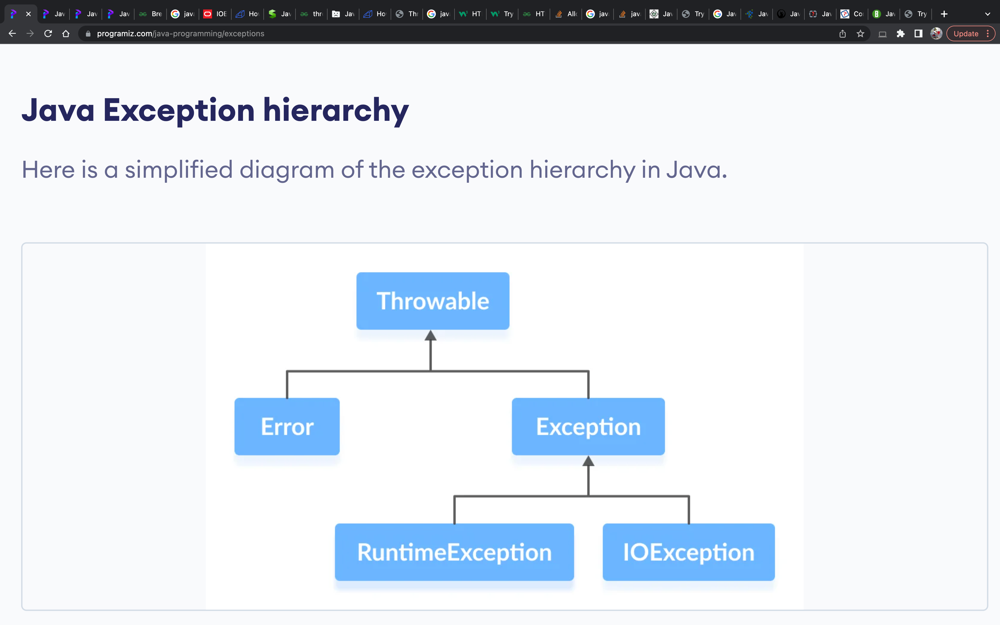

Class TryCatchFinally
java.lang.Object
com.example.javacoredemo.excption.TryCatchFinally
- Author:
- Yasir Satti
An exception is an unexpected event that occurs during program execution. It affects the flow of the program instructions which can cause the program to terminate abnormally.

-
Errors:
Errors represent irrecoverable conditions such as Java virtual machine (JVM) running out of memory, memory leaks, stack overflow errors, library incompatibility, infinite recursion, etc.
Errors are usually beyond the control of the programmer and we should not try to handle errors. -
Exceptions:
Exceptions can be caught and handled by the program. When an exception occurs within a method, it creates an object. This object is called the exception object. It contains information about the exception such as the name and description of the exception and state of the program when the exception occurred.
Exceptions can be categorized into two types:-
RuntimeException ( Unchecked Exceptions ):
A runtime exception happens due to a programming error. They are also known as unchecked exceptions.They are not checked at compile-time but at run-time.For example: ArithmeticException, NullPointerException, ArrayIndexOutOfBoundsException, exceptions under Error class, etc.
You can think about it in this way. “If it is a runtime exception, it is your fault”.
- The NullPointerException would not have occurred if you had checked whether the variable was initialized or not before using it.
- An ArrayIndexOutOfBoundsException would not have occurred if you tested the array index against the array bounds. -
IOException ( Checked Exceptions ):
An IOException is also known as a checked exception. They are checked by the compiler at the compile-time and the programmer is prompted to handle these exceptions. For example, IOException, InterruptedException, etc.
Refer to Java Exceptions to learn in detail about checked and unchecked exceptions.
Usually, we don't need to handle unchecked exceptions. It's because unchecked exceptions occur due to programming errors. And, it is a good practice to correct them instead of handling them. -
Errors:
- See Also:
- Java Try..Catch..Finally block
, Most common checked and unchecked Java Exceptions
, List of Java Exceptions
-
Constructor Summary
Constructors -
Method Summary
-
Constructor Details
-
TryCatchFinally
public TryCatchFinally()
-
-
Method Details
-
demo
public void demo()Demonstrates use of try-catch-finally.- Since:
- 1.0
-